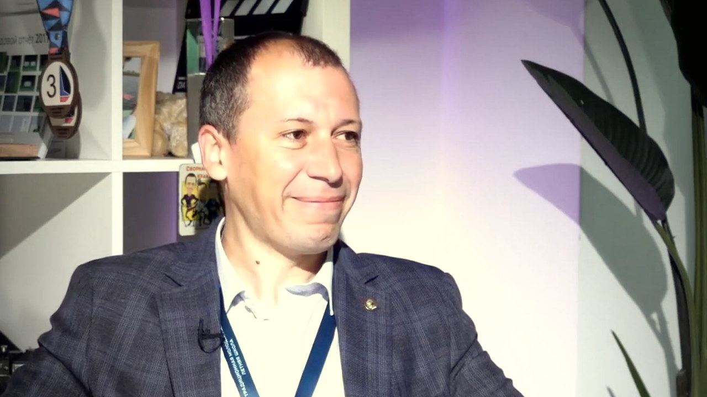

Александр Горнов
Доктор технических наук, специалист по методам оптимизации
Записано в одной студии в один день
Этот разговор стал главой книги
«Оптимизация как способ смотреть на мир» — личное обращение героя к читателю, цитаты,
опоры и блок «Возьми с собой».
Читать главу →
Читать главу →

01О герое
Доктор технических наук — об оптимизации как сквозной технологии, Ленинской библиотеке как личной школе и том, зачем учёному горы и авторская песня.
02Ключевые тезисы
- Оптимизация — сквозная технология: она нужна в инженерии, IT, управлении и ИИ.
- Прикладной проект всегда строится вокруг людей и доверия.
- Серьёзная наука требует характера и готовности долго идти без гарантии результата.
03Возьми с собой
Что применить
Делай хорошо, старательно, на совесть — как для себя.
Найди свой способ смотреть на мир с другой стороны — как горы у альпиниста.
Цитаты
Горы — это возможность смотреть на мир с другой стороны.
— Александр Горнов
Сделали хорошо, старательно, на совесть, для себя.
— Александр Горнов